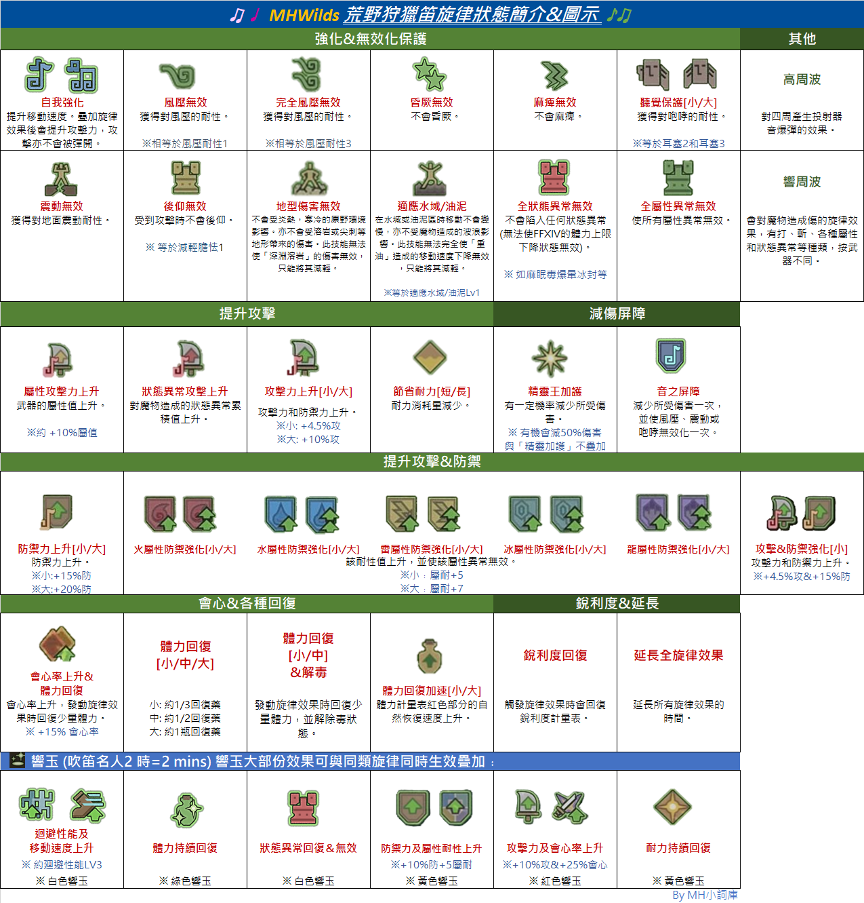

music_note狩獵笛資料及篩選
遊戲版本：
屬性：
常用旋律：
常用響玉：
特殊演奏：
載入資料中...
💡旋律圖示表（點擊展開 / 收合） expand_more
內容以Mhwilds的版本為本，資料人手整合或有錯漏。
效果 🚨※數值非官方資料。

×

💡 旋律一覽 (文字版) expand_more
效果 🚨※數值非官方資料。
內容以Mhwilds的版本為本，資料人手整合或有錯漏。
| 自我強化 | 提升移動速度。疉加旋律效果後會提升攻擊力，攻擊亦不會被彈開。 |
| 風壓無效 | 獲得對風壓的耐性。 |
| 完全風壓無效 | 獲得對風壓的耐性。 |
| 昏厥無效 | 不會昏厥。 |
| 麻痺無效 | 不會麻痺。 |
| 聽覺保護[小] | 獲得對咆哮的耐性。※等於耳塞2 |
| 聽覺保護[大] | 獲得對咆哮的耐性。※等於耳塞3 |
| 震動無效 | 獲得對地面震動的耐性。 |
| 後仰無效 | 受到攻擊時不會後仰。 |
| 地型傷害無效 | 不會受炎熱，寒冷的厡野環境影響。亦不會受溶岩或尖刺等地形帶來的傷害。然而，此技能無法使「深淵溶岩」的傷害無效，只能將其減輕。 |
| 適應域油泥 | 在水堿或油泥區時移動不會變慢，亦不受魔物造成的波浪影響。然而此技能無法完全使「重油」造成的移動速度下降無效，只能將其減輕。 |
| 全狀熊異常無效 | 不會陷入任何狀態異常(無法使FFXIV的體力上限下降狀態無效) |
| 精露王加護 | 有一定機率減少所受傷害。※ 有1/3機會減50%傷害，與「精靈加護」不疊加。 |
| 屬性攻擊力上升 | 武器的屬性值上升。※ 約+10%屬值 |
| 狀態異常攻擊上升 | 對魔物造成的狀態異常累積值上升。 |
| 全屬性異常無效 | 使所有屬性異常無效。 |
| 體力回復加速[小] | 體力計量表紅色部分的自然恢復速度上升。 |
| 體力回復加速[大] | 體力計量表紅色部分的自然恢復速度上升。 |
| 節省耐力[短/長] | 耐力消耗量減少。 |
| 攻擊力上升小 | 攻擊力上升。※小: +4.5%攻 |
| 攻擊力上升大 | 攻擊力上升。※大: +10%攻 |
| 防禦力上升小 | 防禦力上升。※小:約+15%防 |
| 防禦力上升大 | 防禦力上升。※大:約+20%防 |
| 體力回復[小/中/大] | 發動旋律時會回復體力。 |
| 火屬性防禦強化 | 火耐性值上升，並使火屬性異常無效。※小﹕屬耐+5 ※大﹕屬耐+7 |
| 水屬性防禦強化 | 水耐性值上升，並使水屬性異常無效。※小﹕屬耐+5 ※大﹕屬耐+7 |
| 雷屬性防禦強化[大] | 雷耐性值上升，並使雷屬性異常無效。※小﹕屬耐+5 ※大﹕屬耐+7 |
| 冰屬性防禦強化 | 冰耐性值上升，並使冰屬性異常無效。※小﹕屬耐+5 ※大﹕屬耐+7 |
| 龍屬性防禦強化 | 龍耐性值上升，並使龍屬性異常無效。※小﹕屬耐+5 ※大﹕屬耐+7 |
| 體力回復[小/中]&解毒 | 發動旋律效果時回復少量體力，並解除毒狀態。 |
| 音之屏障 | 減少所受傷害一次，並使風壓、震動或咆哮無效化一次。 |
| 攻擊&防禦強化小 | 攻擊力和防禦力上升。 |
| 會心率上升&體力回復 | 會心率上升，發動旋律效果時回復少量體力。※ +15% 會心率 |
| 高周波 | 對四周產生投射器音爆彈的效果。 |
| 延長全旋律效果 | 延長所有旋律效果的時間。 |
| 銳利度回復 | 觸發旋律效果時會回復銳利度計量表。 |
| 響周波 | 會對魔物造成傷的旋律效果，有打、斬、各種屬性和狀態異常等種類，按武器不同。 |
| 連消帶打之曲 | 可抵消魔物攻擊的特殊演奏攻擊。亦可用作威力較高的普通攻擊。 |
| 生命之曲 | 威力較高的多段特殊演奏攻擊。攻擊命中魔物時會釋放出具貫通效果的音波造成更大傷害。 |
| 響鳴之曲 | 大幅回復體力的特殊演奏。效果強大，但破綻亦大，要看準時機使用。 |
💡 機械/巨戟笛-旋律概要 expand_more
| ※機械笛-旋律概要※ | ||
| 無屬 | 火水冰雷龍 | 麻毒眠爆 |
| 自我強化 | 自我強化 | 自我強化 |
| 節省耐力長 | 屬性攻擊力上升 | 狀態異常攻擊力上升 |
| 防禦力上升大 | 全屬性異常無效 | 精靈王加護 |
| 風壓完全無效 | 高周波 | 全狀態異常無效 |
| 攻擊&防禦強化小 | 銳利度回復 | - |
| 響周波 [斬] | 響周波 [屬] | 響周波 [異常] |
| 連消帶打之曲 | 響鳴之曲 | 連消帶打之曲 |
| 響玉﹕狀熊異常及屬性異常無效 | 響玉﹕狀熊異常及 屬性異常無效 |
響玉﹕防禦力及 屬性耐性上升 |
| ※巨戟-激化種類對響玉種類的改變:※ | ||
| 攻擊激化 (攻+10, 會-15%) |
會心激化 (會+10%, 屬+20, 攻&斬-10) |
屬性激化 (屬+80, 會-5%) |
| 狀熊異常及屬性異常無效 | 耐力持續回復 | 防禦力及屬性耐性上升 |